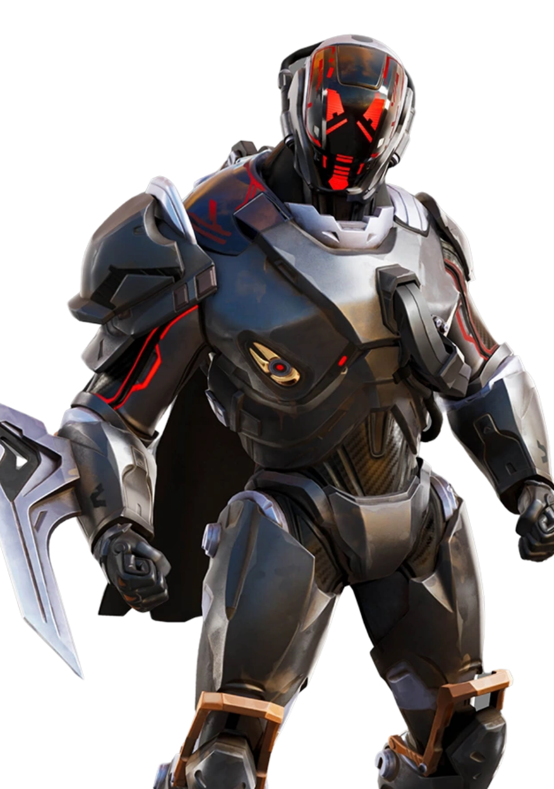

Le Scientifique
// Archives Biographiques
L'Ingénieur Cosmique
Membre éminent de la mystérieuse organisation des "Sept", Le Scientifique est reconnaissable à son armure lourde et imposante, surmontée d'un casque à visière numérique similaire à celui de son confrère, Le Visiteur. Esprit brillant, pragmatique et souvent condescendant, il est le cerveau technique du groupe. Son rôle est de concevoir les dispositifs complexes capables de manipuler l'énergie infinie des réalités et d'endiguer les menaces cosmiques qui pèsent sur l'omnivers.
L'Intervention au Temple Zéro
Il fait son apparition inopinée à la toute fin du Tome 2, alors que la dislocation d'Astéria bat son plein et que l'île part en lambeaux dans le vide spatial. Le Clan du Soleil, fuyant la fureur de l'Exécutrice Cubique, le surprend à l'intérieur du Temple Zéro, en train d'installer froidement un dispositif directement sur l'orbe. D'un calme olympien au milieu de l'apocalypse, il reconnaît immédiatement Scarlet, Barret et les autres, avouant que Le Visiteur lui a déjà parlé du groupe "qui se prend pour des héros".
Le Protocole "Bulle de Réalité"
Loin de se laisser impressionner par la colère de Barret, Le Scientifique leur ordonne de rester en dehors de ses affaires, jugeant que la situation dépasse largement leurs compétences. Il dévoile alors le plan risqué mais indispensable des Sept : écarter définitivement l'Ultime Réalité, puis lancer le protocole "Bulle de Réalité". Une manœuvre d'une ampleur inimaginable visant à sécuriser le Point Zéro avant que des entités malveillantes ou l'Institut Onirique ne puissent à nouveau le corrompre.